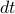

Scaling & Derivatives
You know, one of the issues with recorded classes is that people don't bother to show up to class! I swear, on the first day of class, there were a lot more people sitting here than there are today. I don't blame them; it's super convenient to view lectures on your own time…
‘‘Did I make some comment about not getting paid?’’
Today we'll do some more derivations about properties of the Fourier transform. Just like last time, we'll talk about the sort of logic behind these sort of arguments; and again, we'll leave the rigor police off-duty.
Properties of F.T.
Linearity
The F.T. is a linear transformation; that is, the F.T. of a sum is the sum of the F.T.; and if you multiply a function by a constant, it's that same constant times the F.T>. The whole point of this princple of superposition is that if you can write a system as a sum of different components, you can just sum of the F.T. of each of the parts. Life is really nice when things are linear.
Now this is a sort of property we take for granted. The more interesting property is the Shift theorem.
The Shift therom
What happens to the F.T. if the time is delayed by constant  ?
?
We want to find the fourier transfrom of , which is
there's a problem with notation here! We mean the ‘‘fourier transform of the shifted function’’, but on the LHS we're also evaluating the F.T.'s function at the point  ….. Notation is a genuine problem in the subject! And it can get in the way of understanding things! (On the homework, we'll talk about scaling and shifting operators….which is nice, since you don't have to explicitly say the argument of
….. Notation is a genuine problem in the subject! And it can get in the way of understanding things! (On the homework, we'll talk about scaling and shifting operators….which is nice, since you don't have to explicitly say the argument of  ….but it's also confusing since it introduces extra things). Anyways, we should just remember to be careful about what variables mean so we don't go wrong.
….but it's also confusing since it introduces extra things). Anyways, we should just remember to be careful about what variables mean so we don't go wrong.
To evaluate the integral here, we do a change of variables (as usual) to , so that the argument of becomes  . And then there's an extra factor of up in the exponent, so we just have a total phase shift of which we can pull out of the integral.
. And then there's an extra factor of up in the exponent, so we just have a total phase shift of which we can pull out of the integral.
The net result of the shifting operation is that we end up with a phase shift in the spectrum.
Often, we'll hear this said as ‘‘a time shift in time corresponds to a phase shift in spectrum’’.
Notice that the magnitude of the spectrum doesn't change when you shift the time; only its phase changes.
Again, these properties aren't terribly difficult to derive, but they're fundamental and important to know, and highly applicable! The logic we use in them is pretty important to know…simple things, but we should do them with ‘‘gusto and confidence’’!
Stretch theorem or Similarity theorem
Now the question is, ‘‘what happens when you take the Fourier transform of a stretched sigal’’, , where ?
To figure this out, we do the same thing. Again, we switch our variable of integration to so that the argument inside is a simple , but this time around, we have to be a bit careful….
 goes to …
the
 in the exponent goes to , and we can slide the one over
in the exponent goes to , and we can slide the one over  to the , so that now we just have a in place of .
to the , so that now we just have a in place of .
If we take , we end up with
The subtle thing here is what happens when is negative! Then the limits of integration swap around when we change variables to , and we'll need to introduce an overall minus sign to put them back to  and . So this time the result looks like
and . So this time the result looks like
with a minus sign!
And to combine the two cases into one equation, we put an absolute value around the a outside the Fourier transform.
There's a number of comments to make here:
‘‘This is a fine example of a reciprocal relationship’’ – which as you remember, help us organize our understadning and build our intution. In this case, if we scale the time
by a factor , then the frequency and the magnitude of the F.T. have both been scaled by , the reciprocal of !One way to interpret this is graphically. (Graphs aren't always our most useful tool, but in this case they can help us!) Remember that when we scale , the graph gets squeezed along the x-axis if , and it's stretched if
 .
.There's a silly way to remember what this scaling operation does to
…does it squeeze it or stretch it?….we went through a fun argument in class, and it's also in the course reader…
And also, remember that even though the F.T> of a function is generally complex, we can still plot it on a graph by considering its magnitdue .
This means that…
If  , then:
, then:
the time-domain function is squeezed in time
the frequency-domain function is stretched in time.
If , then:
the time-domain function is stretched in time
the frequency-domain function is squeezed in time.
The consequence is that you can't have a function that's concentrated both in time and in frequency! If you try to squeeze it in the time domain, you stretch it in the freq domain, and vice versa if you try the other way.
This is reminiscent of the uncertainty principle in quantum mechanics! Hehehe.
The limiting extreme case of this principle is the delta function. It's infinitely concentrated in the time domain, but when you take the fourier transform, it has a flat and uniform frequency for all frequency components.
There's different sorts of transforms in signal processing such as wavelet transforms where you can concentrate them in both the frequency and time domains.
Philosophically, the stretching theorem tells us a pretty important property of Fourier Transforms:
You can't squeeze a function in both the time domain and the frequency domain.
As a side note, in higher dimensions, the generalization of the scaling theorem leads to a more general idea of what a reciprocal means.
Is this related to reciprocal lattice and Miller planes in the field of crystallography? I've always been so confused by the whole idea…
Some examples
Then we went through a few examples to gain some intution. These examples look much better with actual graphs to stare at, but the best I can do is to describe in words what we did in calss.
The square wave.
Remember that the FT of the square wave is the sinc function which was defined as . If we apply the scaling theorem, it says:
The FT of the stretched rectangle function is a squeezed sinc function. It's squeezed both in the x and y axes when you graph it –
‘‘Not hard, but you've got to get it in your gut!’’
The Derivative Theorem
This is true magic! It's not clear at all that the Fourier Transform has anything to do with derivatives!! But remarkably, something magical happens when you mix in differentiation and Fourier transforming.
Fir'st let's consider what happens when you take the derivative of the FT of a function. What is ?
We expand out the definition…
We pull the derivative inside the integral.
the rigor police are now rolling aroudn in their graves! There's a lot of conditions and religions and such that need to apply for us to do this.
physicsits do this all the time with impunity!
Now the derivative hits the exponential and pulls down a factor of
as well as some constants in front of it.The end result is that we end up with the FT of something times . Wow!
Multiplication by time corresponds to differentian in frequency domain!
The dual statement
If we ask a similar but related question, we end up with a nice symmetric result as well. Instead of finding the derivative of the Fourier Transfrom, this time we want to find the FT of a derivative .
This time, the ‘‘proof’’ had a sort of different flavor, where we first wrote the derivative in terms of a difference quotient (from the first few weeks of calculus class) and then plugged that into the Fourier transform.
We use linearity to separate out the terms, and we have the FT of two different terms – one with , the other one with
 .
.We apply the shift theorem to the first term, so we get an overall phase shift of on the first term
Both terms have a fourier transfrom of
, so we factor it out. We're left with the expression
And then we can simplify that fraction in the limit
 . In class, we performed the limit by recognizing it as the derivative of a function . Personally, I would do a physicisty-thing and just expand the exponential in terms of a Taylor series, and then drop off all higher-order terms .
. In class, we performed the limit by recognizing it as the derivative of a function . Personally, I would do a physicisty-thing and just expand the exponential in terms of a Taylor series, and then drop off all higher-order terms .No matter how you do it, the fraction turns into as
. So our end result is…
Wow! The fourier transform can turn derivatives into multiplication!
This is very useful if we want to solve differential equations; the Fourier xfm lets us turn them into algebraic equations, which can be much easier to solve. Think to the Laplace transform in your ODE eclass.
And remember, there's no reason a priori to expect the Fourier transform – which isa complicated operation – to turn multiplication into derivatives – which are also another complicated operation! This is a quite magical relationship. And we'll put it to good use soon.